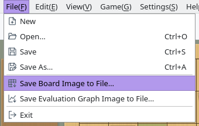
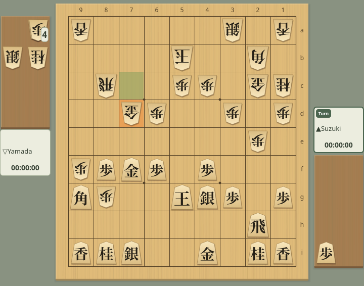
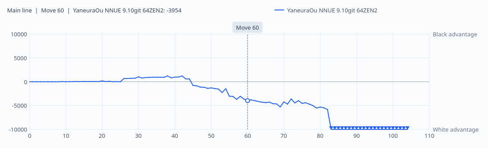

Save or copy the board and the evaluation graph as images
Screenshots were captured on Linux with the English interface.
Turn the board and the evaluation graph into images, exactly as shown on screen
Choose File → Save Board Image to File… or Save Evaluation Graph Image to File… to save an image. In the save dialog you can choose the file type (PNG, JPEG, WebP, BMP, TIFF and so on; the available formats depend on your system). The dialog starts in your Pictures folder with a name such as “ShogiBoard_date_time.png” (“EvalGraph_date_time.png” for the graph).
To paste the image into a document or an image editor without saving a file, choose Edit → Copy Board Image or Copy Eval Graph Image. The copied image is the same as the saved one.

File menu: the commands that save images
Save the board together with the piece stands and player cards
The board image contains the board and piece stands, the player names with their remaining time and the Turn badge, and the highlight of the last move, exactly as on screen.
Its size follows the displayed board size (View → Enlarge Board or Shrink Board). A flipped board is saved flipped, and the colors and piece style follow your Game Appearance and Piece Styles settings.

Exported board image (move 60)
Save the course of the game as a graph image
The evaluation graph image is the graph in the Evaluation Graph tab at its current size. It shows the engine scores from games or Game Analysis and the position of the current move.
Show the Evaluation Graph tab and adjust the panel size before saving to get the image size you want.

Exported evaluation graph (game analysis results, move 60 selected)